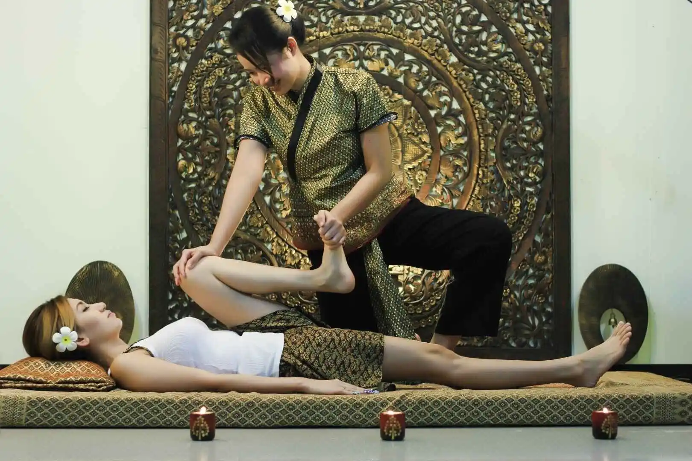

Nos Massages à Aix-la-Chapelle
Vivez la détente et le bien-être avec nos différentes offres de massage – du massage thaï traditionnel aux pierres chaudes.

Massage thaï traditionnel
Le massage thaï classique (Nuad Thai) associe acupression, étirements et travail énergétique. Il favorise la circulation, soulage les tensions et harmonise le corps et l'esprit.
- Idéal contre le stress, les tensions & en prévention
- Soin complet du corps sur un matelas traditionnel
- Convient à tous les âges

Massage thaï à l'huile
Des gestes doux et des huiles de qualité procurent une détente profonde, une peau souple et une agréable sensation corporelle. Moins d'étirements, plus de bien-être.
- Recommandé pour les peaux sensibles & la récupération
- Idéal après le sport ou en cas de stress quotidien
Massage aux pierres chaudes
La chaleur et des techniques ciblées avec des pierres chaudes dénouent même les tensions profondes et stimulent la circulation.
- Parfait pour les contractures musculaires & la relaxation profonde
- Renforce le système immunitaire et le bien-être
Pourquoi nous choisir ?
Thérapeutes certifiées
Emplacement central
Horaires flexibles
Tarifs attractifs
Questions fréquentes : Déroulement d'une séance
Vous êtes accueilli dans une atmosphère détendue et chaleureuse. Après une brève présentation, vous pouvez prendre le temps de vous installer et de vous préparer à la séance.
Nous mettons à votre disposition des serviettes propres et, si besoin, des vêtements confortables. Vous pouvez vous changer dans un espace privé et garder vos effets personnels en sécurité.
Bien sûr ! N'hésitez pas à nous faire part de vos souhaits, de vos éventuelles douleurs ou de vos particularités de santé avant la séance. Nos thérapeutes adapteront le massage à vos besoins.
Après le massage, vous pouvez encore vous détendre quelques instants et, si vous le souhaitez, déguster un thé thaï traditionnel. Vous repartez ainsi détendu et apaisé.
Prendre rendez-vous
Pas de massages érotiques !